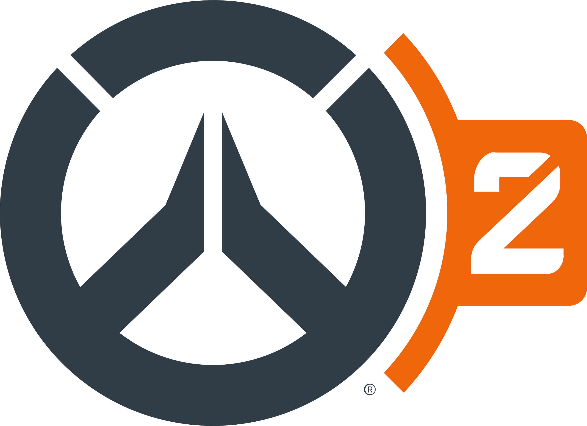

Likes
HoYoverse Games
Genshin Impact, Honkai: Star Rail


I've been playing this evil gacha game for 5 years now, and yes I still love it.
My biggest motivation to keep playing has been Scaramouche/Wanderer since the vers. 1.1 patch, & I'm still going strong!!!
Overwatch 2
Overwatch 1 player since 2016; I main support, specifically Ana Amari, my favorite grandma!
Besides Ana, I like playing Kiriko, Moira, and Juno. Please don't make me play anything else, I will throw.
CookieRun
Ovenbreak, Kingdom, Tower of Adventures


I've been a CookieRun fan since around my middle school days, so I have a soft spot for these little guys.
My favorite is Herb Cookie, but I also love Kohlrabi Cookie, Lemon Zest Cookie, and Buttermilk Cookie!
VTubers
Hanasaki Miyabi (HOLOSTARS JP), Gigi Murin (hololive EN), Kuzuha (NIJISANJI JP), Rosemi Lovelock (NIJISANJI EN), Mint Fantôme


I've loved the concept of VTubers since Kizuna Ai, the first VTuber to blow up, but until I discovered HOLOSTARS, I wasn't
all too interested. Now, I'm too far in the rabbit hole. I love the silly guys and the weird cute girlies...